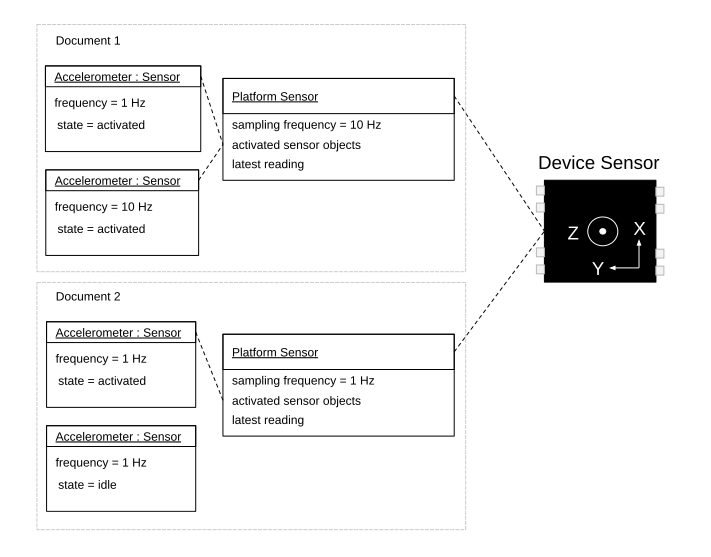

1. Introduction
Increasingly, sensor data is used in application development to enable new use cases such as geolocation, counting steps or head-tracking. This is especially true on mobile devices where new sensors are added regularly.
Exposing sensor data to the Web has so far been both slow-paced and ad-hoc. Few sensors are already exposed to the Web. When they are, it is often in ways that limit their possible use cases (for example by exposing abstractions that are too high-level and which don’t perform well enough). APIs also vary greatly from one sensor to the next which increases the cognitive burden of Web application developers and slows development.
The goal of the Generic Sensor API is to promote consistency across sensor APIs, enable advanced use cases thanks to performant low-level APIs, and increase the pace at which new sensors can be exposed to the Web by simplifying the specification and implementation processes.
A comprehensive list of concrete sensors that are based on Generic Sensor API, applicable use cases, and code examples can be found in [GENERIC-SENSOR-USECASES] and [MOTION-SENSORS] explainer documents.
2. Scope
This section is non-normative.
The scope of this specification is currently limited to specifying primitives which enable exposing data from device sensors.
Exposing remote sensors or sensors found on personal area networks (e.g. Bluetooth) is out of scope. As work in these areas mature, it is possible that common, lower-level primitives be found, in which case this specification will be updated accordingly. This should have little to no effects on implementations, however.
This specification also does not currently expose a sensor discovery API. This is because the limited number of sensors currently available to user agents does not warrant such an API. Using feature detection, such as described in § 3 A note on Feature Detection of Hardware Features, is good enough for now. A subsequent version of this specification might specify such an API, and the current API has been designed with this in mind.
3. A note on Feature Detection of Hardware Features
This section is non-normative.
Feature detection is an established Web development best practice. Resources on the topic are plentiful on and offline and the purpose of this section is not to discuss it further, but rather to put it in the context of detecting hardware-dependent features.
Consider the below feature detection examples:
if ( typeof Gyroscope=== "function" ) { // run in circles... } if ( "ProximitySensor" in window) { // watch out! } if ( window. AmbientLightSensor) { // go dark... } // etc.
All of these tell you something about the presence and possible characteristics of an API. They do not tell you anything, however, about whether that API is actually connected to a real hardware sensor, whether that sensor works, if its still connected, or even whether the user is going to allow you to access it. Note you can check the latter using the Permissions API [PERMISSIONS].
In an ideal world, information about the underlying status would be available upfront. The problem with this is twofold. First, getting this information out of the hardware is costly, in both performance and battery time, and would sit in the critical path. Secondly, the status of the underlying hardware can evolve over time. The user can revoke permission, the connection to the sensor be severed, the operating system may decide to limit sensor usage below a certain battery threshold, etc.
Therefore, an effective strategy is to combine feature detection, which checks whether an API for the sought-after sensor actually exists, and defensive programming which includes:
-
checking for error thrown when instantiating a
Sensorobject, -
listening to errors emitted by it,
-
handling all of the above graciously so that the user’s experience is enhanced by the possible usage of a sensor, not degraded by its absence.
let accelerometer= null ; try { accelerometer= new Accelerometer({ frequency: 10 }); accelerometer. addEventListener( 'error' , event=> { // Handle runtime errors. if ( event. error. name=== 'NotAllowedError' ) { console. log( 'Permission to access sensor was denied.' ); } else if ( event. error. name=== 'NotReadableError' ) { console. log( 'Cannot connect to the sensor.' ); } }); accelerometer. addEventListener( 'reading' , () => reloadOnShake( accelerometer)); accelerometer. start(); } catch ( error) { // Handle construction errors. if ( error. name=== 'SecurityError' ) { console. log( 'Sensor construction was blocked by the Permissions Policy.' ); } else if ( error. name=== 'ReferenceError' ) { console. log( 'Sensor is not supported by the User Agent.' ); } else { throw error; } }
4. Security and privacy considerations
Sensor readings are sensitive data and could become a subject of various attacks from malicious Web pages. Before discussing the mitigation strategies we briefly enumerate the main types of the sensor’s privacy and security threats. The [MOBILESENSORS] categorizes main threats into location tracking, eavesdropping, keystroke monitoring, device fingerprinting, and user identification. This categorization is a good fit for this specification.
The risk of successful attack can increase when sensors are used with each other, in combination with other functionality, or when used over time, specifically with the risk of correlation of data and user identification through fingerprinting. Web application developers using these JavaScript APIs should consider how this information might be correlated with other information and the privacy risks that might be created. The potential risks of collection of such data over a longer period of time should also be considered.
Variations in sensor readings as well as event firing rates offer the possibility of fingerprinting to identify users. User agents may reduce the risk by limiting event rates available to web application developers.
Minimizing the accuracy of a sensor’s readout generally decreases the risk of fingerprinting. User agents should not provide unnecessarily verbose readouts of sensors data. Each sensor type should be assessed individually.
If the same JavaScript code using the API can be used simultaneously in different window contexts on the same device it may be possible for that code to correlate the user across those two contexts, creating unanticipated tracking mechanisms.
User agents should consider providing the user an indication of when the sensor is used and allowing the user to disable it. Additionally, user agents may consider allowing the user to verify past and current sensor use patterns.
Web application developers that use sensors should perform a privacy impact assessment of their application taking all aspects of their application into consideration.
Ability to detect a full working set of sensors on a device can form an identifier and could be used for fingerprinting.
A combination of selected sensors can potentially be used to form an out of band communication channel between devices.
Sensors can potentially be used in cross-device linking and tracking of a user.
4.1. Types of privacy and security threats
This section is non-normative.
4.1.1. Location Tracking
Under this type of threat, the attacks use sensor readings to locate the device without using GPS or any other location sensors. For example, accelerometer data can be used to infer the location of smartphones by using statistical models to obtain estimated trajectory, then map matching algorithms can be used to obtain predicted location points (within a 200-m radius)[MOBILESENSORS].
4.1.2. Eavesdropping
Recovering speech from gyroscope readings is an example of eavesdropping attack. See [GYROSPEECHRECOGNITION].
4.1.3. Keystroke Monitoring
Many user inputs can be inferred from sensor readings, this includes a wide range of attacks on user PINs, passwords, and lock patterns (and even touch actions such as click, scroll, and zoom) using motion sensors. These attacks normally train a machine learning algorithm to discover such information about the users. See [STEALINGPINSVIASENSORS].
4.1.4. Device Fingerprinting
Sensors can provide information that can uniquely identify the device using those sensors. Every concrete sensor model has minor manufacturing imperfections and differences that will be unique for this model. These manufacturing variations and imperfections can be used to fingerprint the device [ACCELPRINT] [MOBILESENSORS].
4.1.5. User Identifying
Sensor readings can be used to identify the user, for example via inferring individual walking patterns from smartphone or wearable device motion sensors' data.
4.2. Mitigation Strategies
This section is non-normative.
This section gives a high-level presentation of some of the mitigation strategies specified in the normative sections of this specification.
4.2.1. Secure Context
Sensor readings are explicitly flagged by the Secure Contexts specification [POWERFUL-FEATURES] as a high-value target for network attackers. Thus all interfaces defined by this specification or extension specifications are only available within a secure context.
4.2.2. Permissions Policy
To avoid the privacy risk of sharing sensor readings with contexts unfamiliar to the user, sensor readings are only available for the documents which are allowed to use the policy-controlled features for the given sensor type. See [PERMISSIONS-POLICY] for more details.
4.2.3. Focused Area
Sensor readings are only available for an active document if the focus and origin check on it returns true.
This is done in order to mitigate the risk of a skimming attack against the navigable containing an element which has gained focus, for example when the user carries out an in-game purchase using a third party payment service from within an iframe.
4.2.4. Visibility State
Sensor readings are only available for the active documents whose visibility state is "visible".
4.2.5. Permissions API
Access to sensor readings are controlled by the Permissions API [PERMISSIONS].
4.3. Mitigation strategies applied on a case by case basis
Each sensor type will need to be assessed individually, taking into account the use cases it enables and its particular threat profile. While some of the below mitigation strategies are effective for certain sensors, they might also hinder or altogether prevent certain use cases.
Note: These mitigation strategies can be applied constantly or temporarily, for example when the user is carrying out specific actions, when other APIs which are known to amplify the level of the threat are in use, etc.
4.3.1. Limit maximum sampling frequency
User agents and extension specifications may mitigate certain threats by defining a sensor type’s maximum sampling frequency.
What upper limit to choose depends on the sensor type, the kind of threats the user agent is trying to protect against, the expected resources of the attacker, etc.
Limiting the maximum sampling frequency prevents use cases which rely on low latency or high data density.
4.3.2. Stop the sensor altogether
This is obviously a last-resort solution, but it can be extremely effective if it’s temporal, for example to prevent password skimming attempts when the user is entering credentials on a different origin ([rfc6454]) or in a different application.
4.3.3. Limit number of delivered readings
An alternative to limiting the maximum sampling frequency is to limit the number of sensor readings delivered to Web application developer, regardless of the sampling frequency. This allows use cases which have low latency requirement to increase the sampling frequency without increasing the amount of data provided.
Discarding intermediary readings prevents certain use cases, such as those relying on certain kinds of filters.
4.3.4. Reduce accuracy
Reducing the accuracy of sensor readings or sensor reading timestamps might also help mitigate certain threats, thus user agents should not provide unnecessarily verbose readouts of sensors data.
Implementations of concrete sensors may define a threshold check algorithm so that new readings that do not differ enough from the latest readings are discarded.
Implementations of concrete sensors may define a reading quantization algorithm to reduce the accuracy of the sensor readings received from a device sensor.
Note: These two mitigation measures often complement each other. An implementation that only executes the threshold check algorithm might expose readings that are too precise, while an implementation that only rounds readings up may provide attackers with information about more precise readings when raw readings are rounded to different values.
Note: Inaccuracies will further increase for operations carried out on the sensor readings, or time deltas calculated from the timestamps. So, this mitigation strategy can affect certain use cases.
Note: While adding random bias to sensor readings has similar effects, it shouldn’t be used in practice as it is easy to filter out the added noise.
4.3.5. Keep the user informed about API use
User agents may choose to keep the user informed about current and past use of the API.
Note: This does not imply keeping a log of the actual sensor readings which would have issues of its own.
5. Concepts
5.1. Sensors
The term device sensor refers to a device’s underlying physical sensor instance.
A device sensor measures a physical quantities and provides a corresponding sensor reading which is a source of information about the environment.
Each sensor reading is composed of the values of the physical quantity measured by the device sensor at time tn which is called the reading timestamp.
If the device sensor performs a spatial measurement (e.g. acceleration, angular velocity), it must be resolved in a local coordinate system that represents a reference frame for the device sensor’s sensor readings. A device sensor that provides such sensor readings is referred to as spatial sensor.
A spatial sensor can be uniaxial, biaxial, or triaxial, depending on the number of orthogonal axes in which it can perform simultaneous measurements.
Scalar physical quantities (e.g. temperature) do not require a local coordinate system for resolution.
The local coordinate system normally used in a mobile device is a Cartesian coordinate system, which is defined relative to the device’s screen, so that X and Y axes are parallel to the screen dimentions and Z axis is perpendicular to the screen surface.
The term platform sensor refers to platform interfaces, with which the user agent interacts to obtain sensor readings for a single sensor type originated from one or more device sensors.
Platform sensor can be defined by the underlying platform (e.g. in a native sensors framework) or by the user agent, if it has a direct access to device sensor.
From the implementation perspective platform sensor can be treated as a software proxy for the corresponding device sensor. It is possible to have multiple platform sensors simultaneously interacting with the same device sensor if the underlying platform suppports it.
In simple cases, a platform sensor corresponds to a single device sensor, but if the provided sensor readings are a product of sensor fusion performed in software, the platform sensor corresponds to a set of device sensors involved in the sensor fusion process.
Discrepancies between a sensor reading and the corresponding physical quantity being measured are corrected through calibration that can happen at manufacturing time. Some sensors can require dynamic calibration to compensate unknown discrepancies.
Note: Platform sensors created through sensor fusion are sometimes called virtual or synthetic sensors. However, the specification doesn’t make any practical distinction between them.
5.2. Sensor Types
Different sensor types measure different physical quantities such as temperature, air pressure, heart-rate, or luminosity.
For the purpose of this specification we distinguish between high-level and low-level sensor types.
Sensor types which are characterized by their implementation are referred to as low-level sensors. For example a Gyroscope is a low-level sensor type.
Sensors named after their readings, regardless of the implementation, are said to be high-level sensors. For instance, geolocation sensors provide information about the user’s location, but the precise means by which this data is obtained is purposefully left opaque (it could come from a GPS chip, network cell triangulation, wifi networks, etc. or any combination of the above) and depends on various, implementation-specific heuristics. High-level sensors are generally the fruits of applying algorithms to low-level sensors—for example, a pedometer can be built using only the output of a gyroscope—or of sensor fusion.
That said, the distinction between high-level and low-level sensor types is somewhat arbitrary and the line between the two is often blurred. For instance, a barometer, which measures air pressure, would be considered low-level for most common purposes, even though it is the product of the sensor fusion of resistive piezo-electric pressure and temperature sensors. Exposing the sensors that compose it would serve no practical purpose; who cares about the temperature of a piezo-electric sensor? A pressure-altimeter would probably fall in the same category, while a nondescript altimeter—which could get its data from either a barometer or a GPS signal—would clearly be categorized as a high-level sensor type.
Because the distinction is somewhat blurry, extensions to this specification (see § 10 Extensibility) are encouraged to provide domain-specific definitions of high-level and low-level sensors for the given sensor types they are targeting.
Sensor readings from different sensor types can be combined together through a process called sensor fusion. This process provides higher-level or more accurate data (often at the cost of increased latency). For example, the readings of a triaxial magnetometer needs to be combined with the readings of an accelerometer to provide a correct bearing.
Smart sensors and sensor hubs have built-in compute resources which allow them to carry out calibration and sensor fusion at the hardware level, freeing up CPU resources and lowering battery consumption in the process.
Sensor fusion can also be carried out in software if it cannot be performed at the hardware level or if an application-specific fusion algorithm is required.
5.3. Default sensor
The Generic Sensor API is designed to make the most common use cases straightforward while still enabling more complex use cases.
Most of devices deployed today do not carry more than one device sensor providing sensor readings of the same type. The use cases which require a set of similar device sensors are rare and generally limited to specific sensor types, such as multiple accelerometers in 2-in-1 laptops.
The API therefore makes it easy to interact with
the device’s default (and often unique) sensor
for each type
simply by instantiating the corresponding Sensor subclass.
Indeed, without specific information identifying a particular sensor of a given type, the default sensor is chosen by the user agent.
If the underlying platform provides an interface to find the default sensor, the user agent must choose the sensor offered by the platform, otherwise the user agent itself defines which of the sensors present on the device is the default sensor.
let sensor= new Accelerometer({ frequency: 30 }); sensor. onreading= () => { ... } sensor. start();
Note: Extensions to this specification may choose not to define a default sensor when doing so wouldn’t make sense. For example, it does not make sense to explicitly define a default sensor for geolocation sensor type as the implementation of its interface can use multiple backends.
In cases where multiple device sensors corresponding to the same type may coexist on the same device, specification extension will have to define ways to uniquely identify each one.
var sensor= new DirectTirePressureSensor({ position: "rear" , side: "left" }); sensor. onreading= _=> console. log( sensor. pressure); sensor. start();
5.4. Sampling Frequency and Reporting Frequency
For the purpose of this specification, a platform sensor’s sampling frequency is defined as a frequency at which a platform sensor obtains sensor readings from the underlying device sensor. The way such sensor readings are obtained is implementation-defined.
The platform sensor’s sampling frequency may not correspond to the device sensor’s actual sampling rate, which, for the purpose of this specification, is opaque.
Note: System-level APIs for sensor readings and the underlying hardware interface to the sensors themselves may be built for polling or events. For a polling-based device sensor, the platform sensor’s sampling frequency would be the rate at which a new reading is requested from the system or hardware. For an event-based device sensor, a platform sensor provides a requested sampling frequency to the system or hardware, and events are generated at that frequency or below. Events may not be generated if the sensor reading has not changed.
A device sensor may provide bounds for the sampling frequency value it can accept from a platform sensor in the form of a minimum sampling frequency and a maximum sampling frequency. A platform sensor’s sampling frequency must not be less than the device sensor’s minimum sampling frequency or greater than its maximum sampling frequency.
A platform sensor’s sampling frequency is determined based on the provided
[[frequency]] of the items in its set of activated sensor objects. The calculation is implementation-defined, but the outcome value must lie within the
bounds set by the platform sensor’s sensor type’s minimum and maximum sampling frequencies and
its device sensor’s minimum and maximum sampling frequencies.
Note: For example, the user agent may estimate the sampling frequency as a Least Common
Denominator (LCD) for a set of provided [[frequency]] capped by sampling frequency
bounds defined by the underlying platform.
The reporting frequency for a concrete Sensor object is defined as a frequency at which
the "reading" event is fired at this object.
A Sensor object cannot access new readings at a higher rate than the
user agent obtains them from the underlying platform, therefore the reporting frequency can
never exceed a platform sensor’s sampling frequency, which in turn can never exceed a
device sensor’s maximum sampling frequency (when specified).
The reporting frequency differs from the Sensor’s [[frequency]] in cases such as:
-
the requested
[[frequency]]lies outside the bounds returned by invoking get a platform sensor’s sampling bounds withSensor’s associated platform sensor. -
the operating system and/or the device sensor automatically discard readings that do not differ enough (in absolute or relative terms) from the previously reported ones via a hardware or operating system filter.
-
the
Sensorinstance’s associated sensor type’s threshold check algorithm fails and the platform sensor’s latest readings are not updated.
5.5. Conditions to expose sensor readings
The user agent can expose sensor readings to a Document
document if and only if all of the following are true:
-
document’s relevant settings object is a secure context.
-
document’s visibility state is "visible".
-
The focus and origin check on document returns true.
-
Specific conditions: Extension specifications may add new conditions to this list to have stricter requirements for their sensor types.
Note: In addition to the conditions above, it is important to note that Sensor
subclasses invoke the check sensor policy-controlled features operation in their
constructors, and § 7.1.7 Sensor.start() invokes request sensor access. Together, these
checks correspond to the mitigation strategies described in § 4.2 Mitigation Strategies.
Note: In order to release hardware resources, the user agent can request underlying platform sensor to suspend notifications about newly available readings until it can expose sensor readings.
6. Model
6.1. Sensor Type
A sensor type must have the following associated data:
-
One or more extension sensor interfaces.
-
A non-empty ordered set of associated powerful feature names referred to as sensor permission names.
Note: Multiple sensor types may share the same name.
-
A non-empty ordered set of associated policy-controlled feature tokens referred to as sensor feature names.
-
A minimum sampling frequency, a positive number. It is either implementation-defined or defined by an extension specification. If both are set, the largest value is used.
-
A maximum sampling frequency, a positive number. It is either implementation-defined or defined by an extension specification. If both are set, the smallest value is used.
The minimum sampling frequency must not be greater than the maximum sampling frequency.
A sensor type may have the following associated data:
-
A threshold check algorithm, which takes as arguments two separate sensor readings and determines if they differ enough to cause a platform sensor’s latest reading map to be updated.
-
A reading quantization algorithm, which takes a sensor reading and returns a less accurate sensor reading.
6.2. Sensor
The current browsing context’s platform sensor must have:
-
An associated set of activated sensor objects, which is initially empty;
-
An associated latest reading map, which holds the latest available sensor readings.
-
An associated sensor type.
Any time a new sensor reading for a platform sensor is obtained and if the user agent can expose sensor readings to the current navigable’s active document, the user agent invokes update latest reading with the platform sensor and the sensor reading as arguments.
The latest reading map contains an entry whose key is "timestamp" and whose value is a high resolution timestamp that estimates the reading timestamp expressed in milliseconds as an unsafe current time.
Latest reading["timestamp"] is initially set to null, unless the latest reading map caches a previous reading.
The other entries of the latest reading map hold the values of the different quantities measured by the platform sensor. The keys of these entries must match the attribute identifier defined by the sensor type’s associated extension sensor interface. The return value of the attribute getter is easily obtained by invoking get value from latest reading with the object implementing the extension sensor interface and the attribute identifier as arguments.
The value of all latest reading entries is initially set to null.
-
Let minimumFrequency be platformSensor’s sensor type’s minimum sampling frequency.
-
If platformSensor’s connected device sensor has a minimum sampling frequency, set minimumFrequency to the maximum of minimumFrequency and this value.
-
Let maximumFrequency be platformSensor’s sensor type’s maximum sampling frequency.
-
If platformSensor’s connected device sensor has a maximum sampling frequency, set maximumFrequency to the minimum of maximumFrequency and this value.
-
Return a tuple (minimumFrequency, maximumFrequency).
This example illustrates a possible implementation of the described Model.
In the diagram below several activated Sensor objects from two
different browsing contexts interact with a single device sensor.

The Sensor object in "idle" state is not among the platform sensor’s
activated sensor objects and thus it does not interact with the device sensor.
In this example there is a platform sensor instance per browsing context.
The latest reading map is shared between Sensor objects from the
same context and is updated at a rate equal to the requested sampling frequency
of the corresponding platform sensor.
7. API
7.1. The Sensor Interface
[SecureContext ,Exposed =(DedicatedWorker ,Window )]interface :Sensor EventTarget {readonly attribute boolean ;activated readonly attribute boolean ;hasReading readonly attribute DOMHighResTimeStamp ?;timestamp undefined ();start undefined ();stop attribute EventHandler ;onreading attribute EventHandler ;onactivate attribute EventHandler ; };onerror dictionary {SensorOptions double ; };frequency
A Sensor object has an associated platform sensor.
Concrete Sensor objects also have an associated sensor type, which is the sensor type
that has their interface among its extension sensor interfaces.
The task source for the tasks mentioned in this specification is the sensor task source.
The event handler event types for the corresponding Sensor Interface’s event handler attributes are defined in Event handlers section.
navigator. permissions. query({ name: 'accelerometer' }). then( result=> { if ( result. state=== 'denied' ) { console. log( 'Permission to use accelerometer sensor is denied.' ); return ; } let acl= new Accelerometer({ frequency: 30 }); let max_magnitude= 0 ; acl. addEventListener( 'activate' , () => console. log( 'Ready to measure.' )); acl. addEventListener( 'error' , error=> console. log( `Error: ${ error. name} ` )); acl. addEventListener( 'reading' , () => { let magnitude= Math. hypot( acl. x, acl. y, acl. z); if ( magnitude> max_magnitude) { max_magnitude= magnitude; console. log( `Max magnitude: ${ max_magnitude} m/s2` ); } }); acl. start(); });
7.1.1. Sensor lifecycle
Note: The nodes in the diagram above represent the states of a Sensor object and they should not be
confused with the possible states of the underlying platform sensor or device sensor.
7.1.2. Sensor garbage collection
A Sensor object whose [[state]] is "activating" must not be garbage collected
if there are any event listeners registered for "activated" events, "reading" events,
or "error" events.
A Sensor object whose [[state]] is "activated" must not be garbage collected
if there are any event listeners registered for "reading" events, or "error" events.
When a Sensor object whose [[state]] is "activated" or "activating" is
garbage collected, the user agent must invoke deactivate a sensor object
with this object as argument.
7.1.3. Sensor internal slots
Instances of Sensor are created
with the internal slots described in the following table:
| Internal Slot | Description (non-normative) |
|---|---|
[[state]]
| The current state of the Sensor object which is one of
"idle",
"activating", or
"activated".
It is initially "idle".
|
[[frequency]]
| A double representing frequency in Hz that is used to calculate
the sampling frequency for the associated platform sensor
and to define the upper bound of the reporting frequency for this
Sensor object. It is initially null.
|
[[lastEventFiredAt]]
| The high resolution timestamp of the latest sensor reading
that was sent to observers of the Sensor object,
expressed in milliseconds that passed since the time origin.
It is initially null.
|
[[pendingReadingNotification]]
| A boolean which indicates whether the observers need to be notified after a new sensor reading was reported. It is initially false. |
7.1.4. Sensor.activated
The activated getter steps are:
7.1.5. Sensor.hasReading
The hasReading getter steps are:
-
Let timestamp be the result of invoking get value from latest reading with this and "timestamp" as arguments.
-
If timestamp is not null, return true.
-
Otherwise, return false.
7.1.6. Sensor.timestamp
timestamp getter steps are:
-
Let global be this’s relevant global object.
-
Let unsafeTimestamp be the result of invoking get value from latest reading with this and "timestamp" as arguments.
-
If unsafeTimestamp is null, return null.
-
Otherwise, return relative high resolution time with unsafeTimestamp and global.
7.1.7. Sensor.start()
The start() method steps are:
-
If this.
[[state]]is either "activating" or "activated", then return. -
Run these sub-steps in parallel:
-
Let permissionState be the result of invoking request sensor access with this as argument.
-
If permissionState is "denied", then:
-
Let e be the result of creating a "
NotAllowedError"DOMException. -
Queue a task to run notify error with this and e as arguments.
-
Return.
-
-
Let connected be the result of invoking connect to sensor with this and this’s relevant global object as argument.
-
If connected is false, then
-
Let e be the result of creating a "
NotReadableError"DOMException. -
Queue a task to run notify error with this and e as arguments.
-
Return.
-
-
Invoke activate a sensor object with this as argument.
-
7.1.8. Sensor.stop()
The stop() method steps are:
-
Run these sub-steps in parallel:
-
Invoke deactivate a sensor object with this as argument.
-
7.1.9. Sensor.onreading
onreading is an EventHandler which is called
to notify that new reading is available.
7.1.10. Sensor.onactivate
onactivate is an EventHandler which is called when
this.[[state]] transitions from "activating" to "activated".
7.1.11. Sensor.onerror
onerror is an EventHandler which is called whenever
an error in an abstract or IDL operation cannot be handled
synchronously.
7.1.12. Event handlers
The following are the event handlers
(and their corresponding event handler event types)
that must be supported as attributes by the objects implementing the Sensor interface:
| event handler | event handler event type |
|---|---|
onreading
| reading
|
onactivate
| activate
|
onerror
| error
|
7.2. The SensorErrorEvent Interface
[SecureContext ,Exposed =(DedicatedWorker ,Window )]interface :SensorErrorEvent Event {(constructor DOMString ,type SensorErrorEventInit );errorEventInitDict readonly attribute DOMException error ; };dictionary :SensorErrorEventInit EventInit {required DOMException ; };error
SensorErrorEvent instances are constructed by following the steps described
in Event’s constructor.
The error attribute must return the
value it was initialized to. It represents the DOMException object passed
to SensorErrorEventInit.
8. Abstract Operations
8.1. Initialize a sensor object
- input
-
sensor_instance, a
Sensorobject.options, a
SensorOptionsdictionary instance. - output
-
None
-
For each key → value of options
-
If the associated supported sensor options does not contain key
-
-
If options["
frequency"] exists, then-
Set sensor_instance.
[[frequency]]to options["frequency"].
Note: There is no guarantee that the requested options["
frequency"] can be respected. See § 5.4 Sampling Frequency and Reporting Frequency for constraints that may be applied. -
8.2. Check sensor policy-controlled features
- input
-
sensor_type, a sensor type.
- output
-
True if all of the associated sensor feature names are allowed to use, false otherwise.
-
Let feature_names be the sensor_type’s associated sensor feature names.
-
For each feature_name of feature_names,
-
If active document is not allowed to use the policy-controlled feature named feature_name, then:
-
Return false.
-
-
-
Return true.
8.3. Connect to sensor
- input
-
sensor, a
Sensorobject.global, a global object.
- output
-
True if sensor was associated with a platform sensor, false otherwise.
-
Let platformSensor be null.
-
Let type be sensor’s associated sensor type.
-
Let virtualSensorType be sensor’s associated virtual sensor type, or null if it is not set.
-
Let topLevelTraversable be global’s navigable’s top-level traversable.
-
If virtualSensorType is not null and topLevelTraversable’s virtual sensor mapping contains virtualSensorType:
-
Let virtualSensor be topLevelTraversable’s virtual sensor mapping[virtualSensorType].
-
If virtualSensor’s can provide readings flag is true, set platformSensor to a platform sensor corresponding to virtualSensor.
Note: If the can provide readings flag is false, platformSensor will remain null and this algorithm will return false.
-
-
Otherwise:
-
If the device has a single device sensor which can provide readings for type, then
-
Set platformSensor to a platform sensor corresponding to this device sensor.
-
-
If the device has multiple device sensors which can provide readings for type, then
-
If type has an associated default sensor, then
-
Set platformSensor to a platform sensor corresponding to this default device sensor.
-
-
-
-
If platformSensor is null, return false.
-
Let bounds be the result of invoking get a platform sensor’s sampling bounds with platformSensor.
-
If sensor.
[[frequency]]is null, set it to an implementation-defined value dependent on type. -
If sensor.
[[frequency]]is less than bounds[0], set it to bounds[0]. -
If sensor.
[[frequency]]is greater than bounds[1], set it to bounds[1]. -
Return true.
8.4. Activate a sensor object
- input
-
sensor_instance, a
Sensorobject. - output
-
None
-
Let sensor be the platform sensor associated with sensor_instance.
-
Append sensor_instance to sensor’s set of activated sensor objects.
-
Invoke set sensor settings with sensor as argument.
-
Queue a task to run notify activated state with sensor_instance as an argument.
8.5. Deactivate a sensor object
- input
-
sensor_instance, a
Sensorobject. - output
-
None
-
Remove all tasks associated with sensor_instance from the task queue associated with sensor task source.
-
Let sensor be the platform sensor associated with sensor_instance.
-
If sensor’s set of activated sensor objects contains sensor_instance,
-
Remove sensor_instance from sensor’s set of activated sensor objects.
-
Invoke set sensor settings with sensor as argument.
-
Set sensor_instance.
[[pendingReadingNotification]]to false. -
Set sensor_instance.
[[lastEventFiredAt]]to null.
-
8.6. Generic Sensor permission revocation algorithm
- input
-
permissionName, a powerful feature name
- output
-
None
-
For each
Sensorinstance sensor in the current realm:-
If sensor’s sensor type’s sensor permission names contains permissionName:
-
Invoke deactivate a sensor object with sensor.
-
Let exception be the result of creating a "
NotAllowedError"DOMException. -
Queue a task to run notify error with sensor and exception.
-
8.7. Set sensor settings
- input
-
platformSensor, a platform sensor.
- output
-
None
-
If platformSensor’s set of activated sensor objects is empty,
-
Set platformSensor’s sampling frequency to null.
-
For each key → value of platformSensor’s latest reading.
-
Set platformSensor’s latest reading[key] to null.
-
-
Update the implementation-defined way in which sensor readings are obtained from platformSensor to no longer provide readings.
-
Return.
-
-
Set platformSensor’s sampling frequency to an implementation-defined value based on the
[[frequency]]values of the items in its activated sensor objects set. -
Let bounds be the result of invoking get a platform sensor’s sampling bounds with platformSensor.
-
Assert: platformSensor’s sampling frequency is greater than or equal to bounds[0] and less than or equal to bounds[1].
8.8. Update latest reading
- input
-
sensor, a platform sensor.
reading, a sensor reading.
- output
-
None
-
Let type be sensor’s associated sensor type.
-
If type’s threshold check algorithm is defined, then:
-
Let result be the result of invoking type’s threshold check algorithm with reading and sensor’s latest reading.
-
If result is false, then abort these steps.
-
-
If reading["timestamp"] exists:
-
Set reading["timestamp"] to the result of converting its current value in an implementation-defined way to an unsafe current time using the same monotonic clock that is shared by time origins.
Note: The goal of this step is to ensure that a timestamp that may have been relative to a different time origin is converted to a value that can be used in computations with the same monotonic clock used by the operations described in [HR-TIME].
-
-
Otherwise, set reading["timestamp"] to the unsafe shared current time.
Note: In neither case is an unsafe current time ever exposed to script.
Sensor.timestampalways returns a coarsened moment relative to a time origin. -
For each key → value of latest reading.
-
Set latest reading[key] to the corresponding value of reading.
-
-
Let activated_sensors be sensor’s associated set of activated sensor objects.
-
Run these sub-steps in parallel:
-
For each s in activated_sensors,
-
Invoke report latest reading updated with s as an argument.
-
-
8.9. Report latest reading updated
- input
-
sensor_instance, a
Sensorobject. - output
-
None
-
If sensor_instance.
[[pendingReadingNotification]]is true,-
Return.
-
-
Set sensor_instance.
[[pendingReadingNotification]]to true. -
Let lastReportedTimestamp be the value of sensor_instance.
[[lastEventFiredAt]]. -
If lastReportedTimestamp is not set
-
Queue a task to run notify new reading with sensor_instance as an argument.
-
Return.
-
-
Assert: sensor_instance.
[[frequency]]is not null. -
Assert: sensor_instance.
[[frequency]]is greater than 0. -
Let reportingInterval be the result of 1 / sensor_instance.
[[frequency]]. -
Let timestampDelta be the result of latest reading["timestamp"] - lastReportedTimestamp.
-
If timestampDelta is greater than or equal to reportingInterval
-
Queue a task to run notify new reading with sensor_instance as an argument.
-
Return.
-
-
Let deferUpdateTime be the result of reportingInterval - timestampDelta.
-
Spin the event loop for a period of time equal to deferUpdateTime.
-
If sensor_instance.
[[pendingReadingNotification]]is true,-
Queue a task to run notify new reading with sensor_instance as an argument.
-
8.10. Notify new reading
- input
-
sensor_instance, a
Sensorobject. - output
-
None
-
Set sensor_instance.
[[pendingReadingNotification]]to false. -
Set sensor_instance.
[[lastEventFiredAt]]to latest reading["timestamp"]. -
Fire an event named "reading" at sensor_instance.
8.11. Notify activated state
- input
-
sensor_instance, a
Sensorobject. - output
-
None
-
Set sensor_instance.
[[state]]to "activated". -
Fire an event named "activate" at sensor_instance.
-
Let sensor be the platform sensor associated with sensor_instance.
-
If sensor’s latest reading["timestamp"] is not null,
-
Queue a task to run notify new reading with sensor_instance as an argument.
-
8.12. Notify error
- input
-
sensor_instance, a
Sensorobject.error, a
DOMException. - output
-
None
-
Set sensor_instance.
[[state]]to "idle". -
Fire an event named "error" at sensor_instance using
SensorErrorEventwith itserrorattribute initialized to error.
8.13. Get value from latest reading
- input
-
sensor_instance, a
Sensorobject.key, a string representing the name of the value.
- output
-
A sensor reading value or null.
-
If sensor_instance.
[[state]]is "activated",-
Let readings be the latest reading of sensor_instance’s related platform sensor.
-
Let type be sensor_instance’s associated sensor type.
-
If type’s reading quantization algorithm is defined, then:
-
Set readings to the result of invoking type’s reading quantization algorithm with readings.
-
-
If the extension specification defines a local coordinate system for sensor_instance,
-
Remap (see [COORDINATES-TRANSFORMATION]) readings values to the local coordinate system.
-
-
Return readings[key].
-
-
Otherwise, return null.
8.14. Request sensor access
- input
-
sensor_instance, a
Sensorobject. - output
-
Let sensor_type be sensor_instance’s associated sensor type.
-
Let sensor_permissions be sensor_type’s associated sensor permission names.
-
For each permission_name in sensor_permissions,
-
Let state be the result of requesting permission to use permission_name.
-
If state is "denied"
-
Return "denied".
-
-
-
Return "granted".
8.15. Focus and origin check
- input
-
document, a
Document. - output
-
A boolean.
-
Let origin be document’s relevant settings object’s origin.
-
Let focusedDocument be document’s node navigable’s top-level traversable’s currently focused area’s DOM anchor’s node document.
-
Let focusedOrigin be focusedDocument’s relevant settings object’s origin.
-
Return true if origin and focusedOrigin are same origin-domain, and false otherwise.
9. Automation
The Generic Sensor API and its extension specifications pose a challenge to test authors, as fully exercising those interfaces requires physical hardware devices that respond in predictable ways. To address this challenge this document defines a number of [WEBDRIVER2] extension commands that allow defining and controlling virtual sensors that behave like device sensors. These virtual sensors represent devices with particular properties and whose readings can be entirely defined by users.
9.1. Virtual Sensors
A virtual sensor simulates the behavior of a device sensor in controlled ways. It reports sensor readings to zero or more platform sensors connected to it.
A virtual sensor has the following associated data:
-
A can provide readings flag (a boolean).
-
A requested sampling frequency (a number). Just like a regular device sensor’s actual sampling frequency is opaque, a virtual sensor’s requested sampling frequency is an implementation-defined value that lies within the bounds set by the minimum sampling frequency and the maximum sampling frequency. If a virtual sensor is not providing readings to any platform sensor, its requested sampling frequency is 0.
Note: Requested sampling frequency’s value depends, among other things, on whether connected platform sensors have requested a certain sampling frequency (which might differ per platform sensor), or whether they are polling the virtual sensor, in which case no sampling frequency might have been requested at all.
-
A minimum sampling frequency (a number). A virtual sensor is a device sensor, so this corresponds to the device sensor’s minimum sampling frequency.
-
A maximum sampling frequency (a number). A virtual sensor is a device sensor, so this corresponds to the device sensor’s maximum sampling frequency.
A virtual sensor type is a string that represents a sensor of a given type.
The per-type virtual sensor metadata is an ordered map of virtual sensor types to virtual sensor metadata. It is initially empty, and extension specifications should define one or more entries in the map corresponding to the sensor types they define.
A virtual sensor metadata is a struct whose items are:
-
- reading parsing algorithm
-
An algorithm that takes a JSON
Objectand returns a sensor reading or undefined.
Each top-level traversable has a virtual sensor mapping, which is an ordered map of virtual sensor types to virtual sensor.
Note: The virtual sensor mapping struct contains data that is common to all virtual sensors of a given type. A virtual sensor contains data that can vary on virtual sensor creation and utilization.
Note: Virtual sensor mappings are tied to top-level traversables rather than any navigable because platform sensors with a given sensor type in all navigables with the same top-level traversable are supposed to connect to the same virtual sensor. This better mimics real-world behavior, where the same hardware (or fusion) sensor provides readings to different navigables.
Note: This behavior additionally aids testing of this specification through web-platform-tests, as all WebDriver communication via testdriver.js goes through the frame containing the test harness.
9.2. Extension Commands
9.2.1. Create virtual sensor
| HTTP Method | URI Template |
|---|---|
| POST | /session/{session id}/sensor |
This extension command creates a new virtual sensor of a certain sensor type. Calls to
Sensor.start() from Sensor instances of the same sensor type will cause this
virtual sensor to be used as their backing device sensor until
§ 9.2.4 Delete virtual sensor is run.
Note: The way this extension command works allows Sensor instances of the same type to
coexist and have different device sensors. A Sensor sensor may have been created and
connected to a real, hardware sensor before this extension command is invoked. It continues to
work and receive readings from it, and only receives readings from a virtual sensor if connect to sensor is invoked again.
| Parameter name | Value type | Required |
|---|---|---|
"type"
| String
| Yes |
"connected"
| Boolean
| No |
"maxSamplingFrequency"
| Number
| No |
"minSamplingFrequency"
| Number
| No |
-
Let virtualSensorType be the result of invoking get a property "
type" from parameters. -
If virtualSensorType is not a
String, return error with WebDriver error code invalid argument. -
If per-type virtual sensor metadata does not contain virtualSensorType, return error with WebDriver error code invalid argument.
-
Let topLevelVirtualSensorMapping be the current browsing context’s top-level traversable’s virtual sensor mapping.
-
If topLevelVirtualSensorMapping contains virtualSensorType, return error with WebDriver error code invalid argument.
-
Let connected be the result of invoking get a property with default with "
connected" and true from parameters. -
Let maxSamplingFrequency be the result of invoking get a property with default with "
maxSamplingFrequency" and an implementation-defined value from parameters. -
If maxSamplingFrequency is not a
Number, or its value is NaN, +∞, or −∞, return error with WebDriver error code invalid argument. -
Let minSamplingFrequency be the result of invoking get a property with default with "
minSamplingFrequency" and an implementation-defined value from parameters. -
If minSamplingFrequency is not a
Number, or its value is NaN, +∞, or −∞, return error with WebDriver error code invalid argument. -
If minSamplingFrequency is greater than maxSamplingFrequency, return error with WebDriver error code invalid argument.
-
Let virtualSensor be a new virtual sensor.
-
Set virtualSensor’s can provide readings flag to connected.
-
Set virtualSensor’s minimum sampling frequency to minSamplingFrequency.
-
Set virtualSensor’s maximum sampling frequency to maxSamplingFrequency.
-
Set topLevelVirtualSensorMapping[virtualSensorType] to virtualSensor.
-
Return success with data
null.
/session/23/sensor with the body:
{ "type" : "ambient-light" , "maxSamplingFrequency" : 60 , "minSamplingFrequency" : 5 }
Be aware that only one virtual sensor of a given sensor type can be created in a top-level traversable, otherwise an invalid argument WebDriver error code will be returned.
9.2.2. Get virtual sensor information
| HTTP Method | URI Template |
|---|---|
| GET | /session/{session id}/sensor/{type} |
This extension command retrieves information about a given virtual sensor created by § 9.2.1 Create virtual sensor.
When it returns success, success’s associated data is an Object with the following
properties:
| Property name | Value type | Description (non-normative) |
|---|---|---|
"requestedSamplingFrequency"
| Number
| The virtual sensor’s requested sampling frequency |
Note: See § 5.4 Sampling Frequency and Reporting Frequency for some constraints on sampling frequency as well as the explanation about why a requested sampling frequency is an implementation-defined value in § 9.1 Virtual Sensors. In general, it is only safe to assume that the value lies within the bounds set by the virtual sensor’s minimum sampling frequency and maximum sampling frequency.
-
Let virtualSensorType be the value of the
typeurl variable. -
Let topLevelVirtualSensorMapping be the current browsing context’s top-level traversable’s virtual sensor mapping.
-
If topLevelVirtualSensorMapping does not contain virtualSensorType, return error with WebDriver error code invalid argument.
-
Let virtualSensor be topLevelVirtualSensorMapping[virtualSensorType].
-
Let info be a new
Object. -
Invoke set a property on info with "
requestedSamplingFrequency" and virtualSensor’s requested sampling frequency. -
Return success with data info.
9.2.3. Update virtual sensor reading
| HTTP Method | URI Template |
|---|---|
| POST | /session/{session id}/sensor/{type} |
This extension command makes a new sensor reading available to platform sensors.
Note: A virtual sensor acts like a device sensor, so the sensor reading produced here still has to be processed by a platform sensor, which might discard it due to, for example, a sensor type’s threshold check algorithm or can expose sensor readings’s result.
| Parameter name | Value type | Required |
|---|---|---|
"reading"
| Object
| Yes |
-
Let reading be the result of invoking get a property "
reading" from parameters. -
If reading is not an
Object, return error with WebDriver error code invalid argument. -
Let virtualSensorType be the value of the
typeurl variable. -
If per-type virtual sensor metadata does not contain virtualSensorType, return error with WebDriver error code invalid argument.
-
Let metadata be per-type virtual sensor metadata[virtualSensorType].
-
Let topLevelVirtualSensorMapping be the current browsing context’s top-level traversable’s virtual sensor mapping.
-
If topLevelVirtualSensorMapping does not contain virtualSensorType, return error with WebDriver error code invalid argument.
-
Let virtualSensor be topLevelVirtualSensorMapping[virtualSensorType].
-
Let parsedReading be the result of invoking metadata’s reading parsing algorithm with reading.
-
If parsedReading is undefined, return error with WebDriver error code invalid argument.
-
In an implementation-defined way, make parsedReading available so that it can be obtained by platform sensors connected to virtualSensor.
-
Return success with data
null.
9.2.3.1. Algorithms for parsing readings
This specification defines some algorithms that extension specifications can use when defining a virtual sensor metadata for use in per-type virtual sensor metadata.
9.2.3.1.1. Parse single-value number reading
- input
-
parameters, a JSON
ObjectvalueName, a string
- output
-
A sensor reading or undefined
-
Let value be the result of invoking get a property from parameters with valueName.
-
If value is not a
Number, or its value is NaN, +∞, or −∞, return undefined. -
Let reading be a new sensor reading.
-
Set reading[valueName] to value.
-
Return reading.
9.2.3.1.2. Parse XYZ reading
- input
-
parameters, a JSON
Object - output
-
A sensor reading or undefined
-
Let x be the result of invoking get a property from parameters with "
x". -
If x is not a
Number, or its value is NaN, +∞, or −∞, return undefined. -
Let y be the result of invoking get a property from parameters with "
y". -
If y is not a
Number, or its value is NaN, +∞, or −∞, return undefined. -
Let z be the result of invoking get a property from parameters with "
z". -
If z is not a
Number, or its value is NaN, +∞, or −∞, return undefined. -
Let reading be a new sensor reading.
-
Set reading["
x"] to x. -
Set reading["
y"] to y. -
Set reading["
z"] to z. -
Return reading.
9.2.4. Delete virtual sensor
| HTTP Method | URI Template |
|---|---|
| DELETE | /session/{session id}/sensor/{type} |
This extension command deletes a given type of virtual sensor.
-
Let virtualSensorType be the value of the
typeurl variable. -
If per-type virtual sensor metadata does not contain virtualSensorType, return error with WebDriver error code invalid argument.
-
Let topLevelVirtualSensorMapping be the current browsing context’s top-level traversable’s virtual sensor mapping.
-
Remove topLevelVirtualSensorMapping[virtualSensorType].
-
Return success with data
null.
Note: The behavior of platform sensors and Sensor instances when a device sensor in use
stops being available (e.g. it has been physically disconnected, or stopped due to a factor
unrelated to the User Agent) is not specified. Implementations may, among other things, keep
existing Sensor instances unchanged (they simply will not report new readings), deactivate a sensor object or cause the platform sensor to report an error that will ultimately result in
notify error being invoked.
10. Extensibility
This section is non-normative.
Note: This section and its subsections provide guidance to extension specification authors using normative language. From implementers' point of view, this section and its subsections are considered non-normative.
This section describes how this specification can be extended to specify APIs for different sensor types.
Such extension specifications are encouraged to focus on a single sensor type, exposing both high and low level as appropriate.
Extension specifications are encouraged to define whether a calibration process applies to sensor readings.
Extension specifications
may explicitly define the local coordinate system for the associated
sensor type or make it configurable per Sensor object.
For an up-to-date list of extension specifications, please refer to [GENERIC-SENSOR-USECASES] and [MOTION-SENSORS] documents.
10.1. Security and Privacy
Extension specifications are expected to:
-
conform with the generic mitigation strategies,
-
consider mitigation strategies applied on a case by case basis,
-
be evaluated against the Self-Review Questionnaire on Security and Privacy [SECURITY-PRIVACY-QUESTIONNAIRE],
-
and in particular, be evaluated against the same-origin policy violations that can arise if sensors expose a new communication channel not governed by the same-origin policy.
10.2. Naming
Sensor interfaces for low-level sensors should be
named after their associated platform sensor.
So for example, the interface associated with a gyroscope
should be simply named Gyroscope.
Sensor interfaces for high-level sensors should be
named by combining the physical quantity the platform sensor measures
with the "Sensor" suffix.
For example, a platform sensor measuring
the distance at which an object is from it
may see its associated interface called ProximitySensor.
Attributes of the Sensor subclass that
hold sensor readings values
should be named after the full name of these values.
For example, the Thermometer interface should hold
the sensor reading’s value in
a temperature attribute (and not a value or temp attribute).
A good starting point for naming are the
Quantities, Units, Dimensions and Data Types Ontologies [QUDT].
10.3. Unit
Extension specifications must specify the unit of sensor readings.
As per the Technical Architecture Group’s (TAG) API Design Principles [API-DESIGN-PRINCIPLES], all time measurement should be in milliseconds. All other units should be specified using, in order of preference, and with the exception of temperature (for which Celsius should be favored over Kelvin), the International System of Units (SI), SI derived units, and Non-SI units accepted for use with the SI, as described in the SI Brochure [SI].
10.4. Exposing High-Level vs. Low-Level Sensors
So far, specifications exposing sensors to the Web platform have focused on high-level sensors APIs. [GEOLOCATION-API] [ORIENTATION-EVENT]
This was a reasonable approach for a number of reasons. Indeed, high-level sensors:
-
convey developer intent clearly,
-
do not require intimate knowledge of how the underlying hardware sensors functions,
-
are easy to use,
-
may enable the User Agent to make significant performance and battery life improvements,
-
help avoid certain privacy and security issues by decreasing the amount and type of information exposed.
However, an increasing number of use cases such as virtual and augmented reality require low-level access to sensors, most notably for performance reasons.
Providing low-level access enables Web application developers to leverage domain-specific constraints and design more performant systems.
Following the precepts of the Extensible Web Manifesto [EXTENNNNSIBLE], extension specifications should focus primarily on exposing low-level sensor APIs, but should also expose high-level APIs when they are clear benefits in doing so.
10.5. When is Enabling Multiple Sensors of the Same Type Not the Right Choice?
It is not advisable to construct multiple Sensor instances of the same sensor type with
equal construction parameters, as it can lead to unnecessary hardware resources consumption.
In cases when multiple observers are interested in notifications of a newly available
sensor reading, an event listener can be added on a single Sensor instance instead of
creating multiple instances of the same sensor type and using simple onreading event
handler.
Conversely, multiple Sensors of the same sensor type can be created when they
are intended to be used with different settings, such as: frequency,
accuracy or other settings defined in extension specifications.
10.6. Definition Requirements
Extension specifications must define all the associated data listed in § 6.1 Sensor Type.
This section provides more information about some of the associated data that extension specifications must specify.
-
An extension sensor interface, which is an interface whose inherited interfaces contains
Sensor. The extension sensor interface must be constructible. Its [Constructor] must take, as an argument, an optional dictionary whose inherited dictionaries containsSensorOptions.The extension sensor interface has a set of supported options referred to as supported sensor options. Unless the extension specification defines otherwise, supported sensor options contain a single item which is "frequency".
The user agent must remove items from supported sensor options for a given extension sensor interface if it cannot support the corresponding sensor options.
The extension sensor interface attributes which expose sensor readings are read only and their getters must return the result of invoking get value from latest reading with this and attribute identifier as arguments.
-
If the sensor type is representing sensor fusion, its sensor permission names must be those associated with the fusion source sensor types.
An extension specification may specify the following definitions for each sensor type:
-
A dictionary whose inherited dictionaries contains
SensorOptions. -
A default sensor. Generally, devices are equipped with a single platform sensor of each type, in which case defining a default sensor is straightforward. For sensor types where multiple sensors are common, extension specifications may choose not to define a default sensor, especially when doing so would not make sense.
10.7. Automation
In order to enable user-agent automation and application testing, extension specifications are encouraged to:
-
Add one or more entries to per-type virtual sensor metadata.
-
Consequently, define one or more virtual sensor metadata instances.
-
Specify a sensor type’s virtual sensor type, which should match the key used in the corresponding per-type virtual sensor metadata entry.
The Proximity Sensor is a sensor type with one associated extension sensor interface,ProximitySensor. Its associated virtual sensor type is "proximity".[...]
The proximity reading parsing algorithm, given a JSON
Objectparameters, must invoke parse single-value number reading with parameters and "distance".The per-type virtual sensor metadata map must have an entry whose key is "
proximity" and whose value is a virtual sensor metadata whose reading parsing algorithm is proximity reading parsing algorithm.
10.8. Extending the Permission API
An implementation of the Sensor interface for each sensor type must protect its
reading by associated name or PermissionDescriptor.
A low-level sensor may use its interface name as a name,
for instance, "gyroscope" or "accelerometer". Fusion sensors must
request permission to access each of the sensors that are
used as a source of fusion.
Even though it might be difficult to reconstruct low-level sensor readings from fused data, some of the original information might be inferred. For example, it is easy to deduce user’s orientation in space if absolute or geomagnetic orientation sensors are used, therefore, these sensors must request permission to use magnetometer as it provides information about orientation of device in relation to Earth’s magnetic field. In contrast, relative orientation sensor does not expose such information, thus, it does not need to request permission to use magnetometer.
Permission descriptors can also be used to set maximum allowed limits
for accuracy or sampling frequency. An example for a possible extension of the Permission API
for accelerometer sensor is given below.
dictionary AccelerometerPermissionDescriptor :PermissionDescriptor {boolean highAccuracy =false ;boolean highFrequency =false ; };
10.9. Extending the Permissions Policy API
An implementation of the Sensor interface for each sensor type has one
(if sensor fusion is not performed) or several policy-controlled features
that control whether or not this implementation can be used in a document.
The features' default allowlist is
'self'.
Note: The default allowlist of 'self' allows Sensor interface
implementation usage in same-origin nested frames but prevents third-party content
from sensor readings access.
The sensor feature names set must contain policy-controlled feature tokens of every associated feature.
A low-level sensor may use its interface name as a policy-controlled feature token,
for instance, "gyroscope" or "accelerometer". Unless the extension specification defines
otherwise, the sensor feature names matches the same type-associated
sensor permission names.
allow attribute to the frame container element:
< iframe src = "https://third-party.com" allow = "accelerometer" /></ iframe >
Permissions- Policy: accelerometer= ()
Fusion sensors must use sensor feature names of the sensors that are used as a source of fusion.
< iframe src = "https://third-party.com" allow = "accelerometer; magnetometer; gyroscope" />
10.10. Example WebIDL
Here’s an example WebIDL for a possible extension of this specification for proximity sensors.
[SecureContext ,Exposed =Window ]interface ProximitySensor :Sensor {constructor (optional ProximitySensorOptions proximitySensorOptions = {});readonly attribute double ?distance ; };dictionary ProximitySensorOptions :SensorOptions {double min ;double max ;ProximitySensorPosition position ;ProximitySensorDirection direction ; };enum ProximitySensorPosition {"top-left" ,"top" ,"top-right" ,"middle-left" ,"middle" ,"middle-right" ,"bottom-left" ,"bottom" ,"bottom-right" };enum ProximitySensorDirection {"front" ,"rear" ,"left" ,"right" ,"top" ,"bottom" };
11. Acknowledgements
First and foremost, I would like to thank Anssi Kostiainen for his continuous and dedicated support and input throughout the development of this specification, as well as Mikhail Pozdnyakov, Alexander Shalamov, Rijubrata Bhaumik, and Kenneth Rohde Christiansen for their invaluable implementation feedback, suggestions, and research that have helped inform the specification work.
Special thanks to Rick Waldron for driving the discussion around a generic sensor API design for the Web, sketching the original API on which this is based, providing implementation feedback from his work on Johnny-Five, and continuous input during the development of this specification.
Special thanks to Boris Smus, Tim Volodine, and Rich Tibbett for their initial work on exposing sensors to the web with consistency.
Thanks to Anne van Kesteren for his tireless help both in person and through IRC.
Thanks to Domenic Denicola and Jake Archibald for their help.
Thanks also to Frederick Hirsch and Dominique Hazaël-Massieux (via the HTML5Apps project) for both their administrative help and technical input.
Thanks to Tab Atkins for making Bikeshed and taking the time to explain its subtleties.
Thanks to Lukasz Olejnik and Maryam Mehrnezhad for their contributions around privacy and security.
The following people have greatly contributed to this specification through extensive discussions on GitHub: Anssi Kostiainen, Boris Smus, chaals, Claes Nilsson, Dave Raggett, David Mark Clements, Domenic Denicola, Dominique Hazaël-Massieux (via the HTML5Apps project), Francesco Iovine, Frederick Hirsch, gmandyam, Jafar Husain, Johannes Hund, Kris Kowal, Lukasz Olejnik, Marcos Caceres, Marijn Kruisselbrink, Mark Foltz, Mats Wichmann, Matthew Podwysocki, Olli Pettay, pablochacin, Remy Sharp, Rich Tibbett, Rick Waldron, Rijubrata Bhaumik, robman, Sean T. McBeth, Tab Atkins Jr., Virginie Galindo, zenparsing, and Zoltan Kis.
We’d also like to thank Anssi Kostiainen, Dominique Hazaël-Massieux, Erik Wilde, and Michael[tm] Smith for their editorial input.